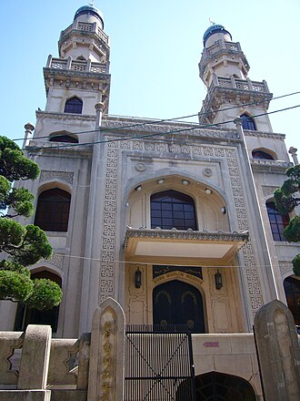

PrésentationتقديمOverview
La mosquée de Kobe (神戸モスク, Kōbe mosuku), construite en 1935, est la plus ancienne mosquée du Japon. Située dans le district de Kitano-chō, elle reprend le style traditionnel turc souhaité par l'architecte Jan Josef Švagr.
مسجد كوبيه يعرف باليابانية بعدة أسماء منها 神戸モスク، 神戸回教寺院 神戸ムスリムモスク. هو مسجد يقع في مدينة كوبه اليابانية وهو المسجد الأول في اليابان, ومن أقدم المساجد في اليابان. بنئ المسجد على يد مجموعة من الاتراك، التتار والهنود التجار في أكتوبر/تشرين الأول عام 1935 ميلادية الذين قطنوا المدينة حيث كانت مدينة كوبيه من أهم المراكز التجارية مع العالم الخارجي في ذلك الوقت. وكان بناؤه ممولا بتبرعات اللجنة الإسلامية لكوبه من عام 1928 وحتى افتتاحه عام 1935.
The Kōbe Mosque, also known as the Kōbe Muslim Mosque (Japanese: 神戸ムスリムモスク, romanized: Kōbe Musurimu Mosuku, is a mosque located in Kōbe, in the Hyōgo Prefecture of Japan. Founded in October 1935, it is Japan's first mosque. Its construction was funded by donations collected by the Islamic Committee of Kōbe from 1928. The mosque was confiscated by the Imperial Japanese Navy in 1943, survived air raids in 1945, and withstood the Great Hanshin earthquake of 1995. It is located in the Kitano-cho foreign district of Kobe, one of the city's best-known tourist areas which features many old western style buildings.
Kobe Camii , ayrıca Kobe Müslüman camii olarak da bilinir 1935 yılının Ekim ayında Kobe'de inşa edildi ve Japonya'nın ilk camiidir. Yapımına Kobe'deki İslam Komitesi tarafından 1928 yılından açılışı olan 1935 yılına kadar maddi kaynak sağlandı. Cami 1943 yılında Japon İmparatorluk Donanması tarafından kamulaştırıldı. Fakat bugün cami olarak işlevini devam ettirmektedir. Camii Kobe'nin yabancı bölgesi olan Kitanoço'dadır. Temeli ve yapısından dolayı Büyük Hanşin Depremi ne dayanmıştır.
Masjid Kobe , juga dikenal sebagai Masjid Muslim Kobe , didirikan pada bulan Oktober 1935 di Kobe dan merupakan masjid pertama di Jepang. Pembangunannya didanai oleh sumbangan dari Komite Islam Kobe dan dimulai sejak tahun 1928 hingga dibuka pada tahun 1935. Masjid ini sempat ditutup oleh Angkatan Laut Kekaisaran Jepang pada tahun 1943, tetapi sekarang sudah aktif dipakai kembali sebagai masjid. Karena memiliki ruang bawah tanah dan struktur bangunan yang kuat, masjid ini selamat dari bencana gempa bumi besar Hanshin pada tahun 1995.
کوبے مسجد جاپان کے شہر کوبے میں واقع ایک مسجد ہے جو اکتوبر 1935ء میں تعمیر کی گئی۔ اسے جاپان کی پہلی مسجد ہونے کا اعزاز حاصل ہے۔ یہ کوبے مسلم مسجد کے نام سے بھی جانی جاتی ہے۔ اس کی تعمیر اسلامی مجلس کوبے کی جانب سے 1928ء سے 1935ء میں اس کی تکمیل تک ہونے والے مالی تعاون اور جمع کردہ عطیات کے باعث ممکن ہو سکی۔ 1943ء میں جاپانی شاہی بحریہ نے اس مسجد پر قبضہ کر لیا تھا۔ تاہم اب اس کی مسجد کی حیثیت بحال ہے اور یہ شہر کے مسلمانوں کا مرکز ہے۔ اپنے مضبوط ڈھانچے اور بنیاد کے باعث ہانشن کے عظیم زلزلے میں بھی یہ مسجد محفوظ رہی۔ یہ مسجد روایتی ترکی انداز میں تعمیر کی گئی اور اسے چیک ماہر تعمیرات جان جوزف سواگر نے تعمیر کیا جو جاپان میں متعدد مغربی مذہبی عمارات کے ماہر تعمیرات ہیں۔
Die Kōbe-Moschee ist eine Moschee im historischen Fremdenviertel Kitano-chō des Stadtbezirks Chūō-ku der japanischen Stadt Kōbe, etwa 10 Minuten zu Fuß vom Bahnhof Sannomiya entfernt.
La moschea di Kobe, anche nota come moschea islamica di Kobe (神戸ムスリムモスク) è un luogo di culto musulmano situato a Kōbe, in Giappone.
神戶清真寺，位於日本兵庫縣神戶市中央区中山手通，是神戶乃至日本第一所清真寺。由捷克建築師揚·約瑟·什瓦格爾，以土耳其風格設計。
神戸ムスリムモスク は兵庫県神戸市中央区の山本通の南、パールストリートにあるモスク（イスラーム教寺院）、歴史的建造物。神戸回教寺院、神戸モスクとも呼ばれる。ムスリムとはアラビア語でイスラム教徒の意。
고베 모스크(일본어: 神戸モスク)는 일본 효고현 고베시 주오구의 기타노이진칸 거리 남쪽 펄 스트리트에 있는 모스크이다. 고베 회교 사원(일본어: 神戸回教寺院), 고베 무슬림 모스크(일본어: 神戸ムスリムモスク, 영어: Kobe Muslim Mosque)가 정식 명칭이다.
कोबे मस्जिद: यह जापान के ह्योगो प्रांत के कोबे शहर में अक्टूबर 1935 में स्थापित जापान की पहली मस्जिद है। इसका निर्माण 1928 से कोबे की इस्लामी समिति द्वारा एकत्रित दान से वित्त पोषित किया गया था, मस्जिद को 1943 में शाही जापानी नौसेना द्वारा जब्त कर लिया गया था, 1945 में हवाई हमलों से बच गई और 1995 के महान हंशिन भूकंप का सामना किया। यह कोबे के कितानो-चो विदेशी जिले में स्थित है, जो शहर के सबसे प्रसिद्ध पर्यटन क्षेत्रों में से एक है, जिसमें कई पुरानी पश्चिमी शैली की इमारतें हैं।
Мечеть Кобе — первая мечеть в Японии, символ раннего присутствия ислама в этой стране[уточнить]. Её строительство финансировалось за счёт пожертвований, собранных Исламским комитетом Кобе с 1928 до 1935 годы. Мечеть была конфискована Имперским японским Флотом в 1943 году, но сейчас это не мешает ей функционировать как мечеть. Её основание и структура были сделаны так, что мечеть смогла устоять при землетрясении 1995 года.
มัสยิดโคเบะ หรืออาจรู้จักในชื่อ มัสยิดมุสลิมโคเบะ ศาสนสถานของศาสนาอิสลาม ตั้งอยู่ในย่านคิตาโนะ-โช ซึ่งเป็นย่านของชาวต่างชาติในเมืองโคเบะ และมัสยิดแห่งนี้ถือเป็นมัสยิดแห่งแรกของประเทศญี่ปุ่น ด้วยเหตุที่เป็นมัสยิดแห่งแรกในประเทศที่ก่อตั้งเพื่อเป็นศูนย์กลางของศาสนิกชนในญี่ปุ่น ที่นี่จึงได้รับสมญานามว่า เมกกะแห่งญี่ปุ่น
Kobe-moskén, också känd som Kobes muslimska tempel (神戸回教寺院) eller Kobes muslimska moské (神戸ムスリムモスク) uppfördes i oktober 1935 i Kobe och är Japans första moské. Konstruktionen finansierades av donationer insamlade av den islamiska kommittén i Kobe från 1928 till grundandet 1935.
Sur la carteعلى الخريطةOn the map
Documents et liensوثائق وروابطDocuments and links
- Wikipédia — Français
- Wikipédia — العربية
- Wikipédia — English
- Wikipédia — Türkçe
- Wikipédia — Bahasa Indonesia
- Wikipédia — اردو
- Wikipédia — Deutsch
- Wikipédia — Italiano
- Wikipédia — 中文
- Wikipédia — 日本語
- Wikipédia — 한국어
- Wikipédia — हिन्दी
- Wikipédia — Русский
- Wikipédia — ไทย
- Wikipédia — Svenska
- Wikidata — Q1334137
Données : Wikidata (CC0), mises à jour tous les 3 mois. L'année est la plus ancienne date de construction connue du bâtiment : pour un édifice devenu mosquée plus tard (comme Sainte-Sophie), c'est celle du bâtiment d'origine. Photos : Wikimedia Commons, auteur et licence sur la page de chaque photo.البيانات: ويكي بيانات (CC0)، تُحدَّث كل 3 أشهر. السنة هي أقدم تاريخ معروف لبناء المبنى: فإن صار مسجدًا لاحقًا (مثل آيا صوفيا) فهي سنة المبنى الأصلي. الصور: ويكيميديا كومنز، المؤلف والرخصة في صفحة كل صورة.Data: Wikidata (CC0), updated every 3 months. The year is the earliest known construction date of the building: for a building that became a mosque later (such as Hagia Sophia), it is that of the original building. Photos: Wikimedia Commons, author and licence on each photo's page.
Grandes mosquées du mondeالجوامع الكبرى في العالمGreat mosques of the world →